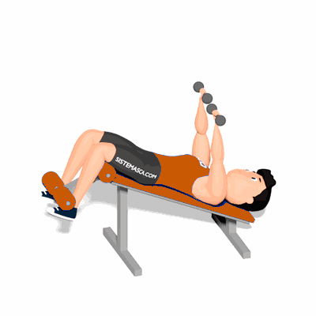

Supino Declinado com Halteres

Neste exercício, por conta da angulação, a porção inferior do peitoral maior será o mais solicitado, proporcionando maior hipertrofia dessa região.
Ficha Técnica
Tipo: Musculação
Grupo Muscular: Peito
Aparelho: Nenhum
Músculos: Nenhum
Como realizar
- Sente-se num banco declinado, com os pés presos no suporte acolchoado e os halteres em cima dos quadris e encostados ao corpo;
- Deite-se com os halteres. Posicione os halteres aos lados do peito com os braços dobrados;
- Empurre os halteres com os cotovelos para cima e para dentro até que os braços fiquem estendidos;
- Baixe o peso para os lados do peitoral até sentir um ligeiro estiramento no peitoral ou deltoides;
- Repita durante o numero desejado de repetições.
 RC STORE
RC STORE